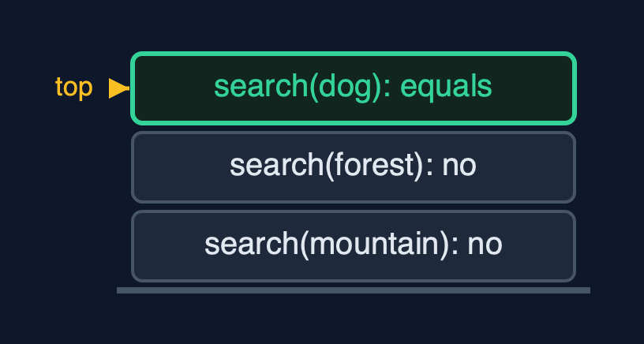
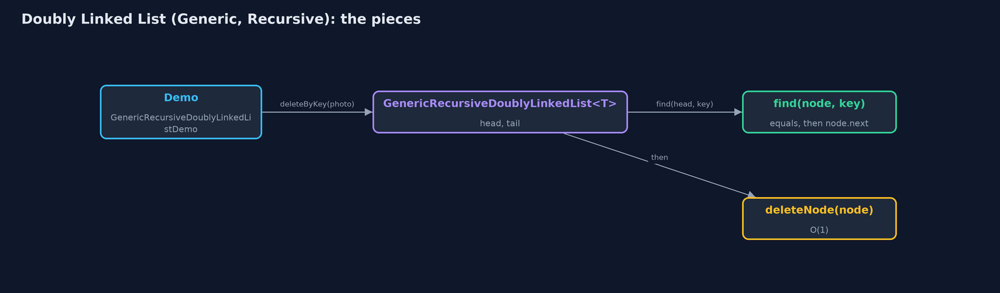
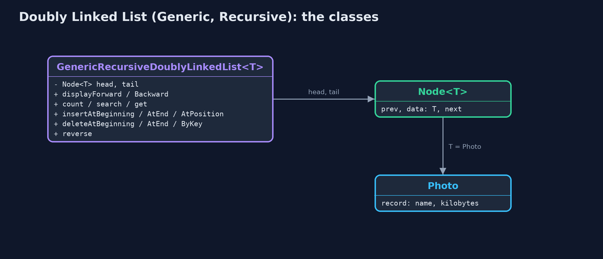
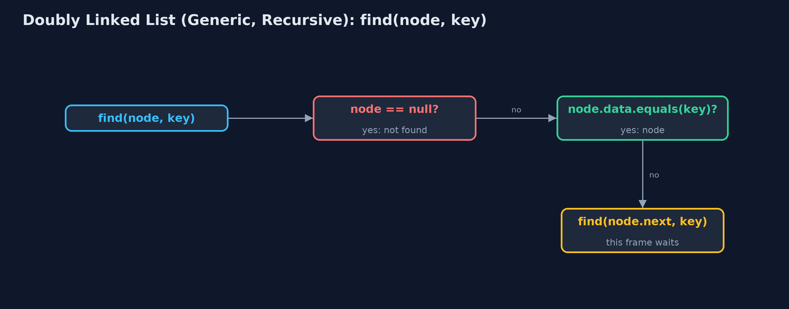
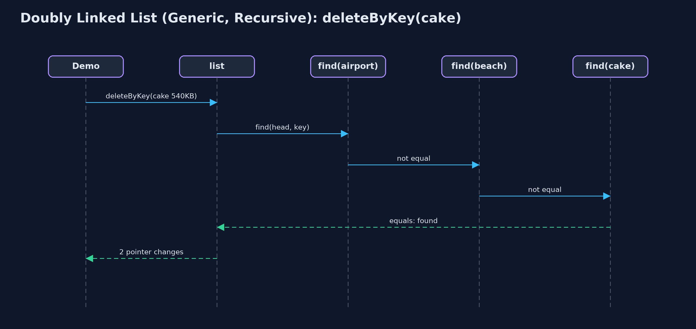

Doubly Linked List (Generic, Recursive)
The generic recursive doubly linked list holds any type T in Node<T>s with prev and next, matches with equals, walks by recursion along next or prev, finds recursively and links in O(1), and works at both ends without recursion; each walk costs a frame per node.

A recursive search along prev from the tail: mountain, forest, then dog equals
This project combines the two variations of the doubly linked list. Like doubly-linked-list-generic, each Node<T> has prev, a reference to a T, and next, and elements are matched with **equals**. Like doubly-linked-list-recursive, every walk is a recursion along next from the head or along prev from the tail; nodes are found recursively and linked in O(1), and the ends need no recursion. The time of every operation equals the loop version's; each recursive walk uses one call-stack frame per node.
New to data structures? Read Start here first: it explains memory, references and counting steps in ten minutes.
The everyday idea
Picture guards on a train carrying any kind of cargo. Asked whether a carriage holds a certain crate, a guard checks their own carriage and, if not, asks the next guard along, forwards or backwards, and waits. Each guard only needs to know how to compare two crates.
The worked example: A photo viewer of Photo records, walked recursively both ways
The photo viewer's album of Photo(name, kilobytes) records, beside the same class holding sizes and names. The demo traces a recursive search along prev, counts and displays other types, works at the ends, inserts and deletes in the middle, reverses recursively, and counts a million nodes.
Why it exists
Generic recursive code over nodes with more than one pointer is exactly the shape of tree code later in the course. The doubly linked list is the gentlest version of it: two pointers, but only one followed at a time.
New words
| Word | What it means here |
|---|---|
| Node<T> | A node with prev, T data and next. |
| equals | How nodes are matched: by contents. |
| find, then link | Finding a node is recursive; changing its links is O(1). |
| recursion depth | One frame per node walked. |
What you will see, act by act
Run the demo and it tells the story in 5 acts, printing the real numbers that the tests check:
./gradlew run| Act | What it shows |
|---|---|
| 1. Recursion along prev, with equals | Searching backwards from the tail for a new Photo("dog", 610): mountain, forest, then dog equals; display backward goes 5 deep. |
| 2. The same recursion, any type | count() on five Integers and display on five Strings: depth 5 each. |
| 3. Both ends without recursion; the middle found recursively | Both ends: depth 0, 6 pointers; search: 4 equals calls, depth 4; insertAtPosition found at depth 2, 4 pointers; deleteByKey found at depth 3, 2 pointers. |
| 4. Reversal, recursively | reverse on seven photos: depth 7, 16 pointer changes including head and tail. |
| 5. The limit of recursion | Counting a million nodes recursively throws StackOverflowError. |
Each act is drawn step by step in the explained walkthrough and in the animation.
The operations, and what they cost
Time is given for the best, average and worst case in Big-O notation (START-HERE.md explains it by counting steps); the last column is what the demo actually counted, so every formula can be checked against a real number.
| Operation | What it does | Time: best / average / worst | Extra space (call stack) | Same operation as a loop | Steps counted in the demo |
|---|---|---|---|---|---|
| Display forward / backward, count | Recurse along next from head, or prev from tail | O(n) / O(n) / O(n) | O(n) | O(1) | depth 5 for 5 nodes |
| Insert / delete at both ends | Through head or tail; no recursion | O(1) / O(1) / O(1) | O(1) | O(1) | depth 0 |
| Insert at position | Find the node before recursively, then 4 pointers | O(1) at 0 / O(n) / O(n) | O(pos) | O(1) | depth 2, 4 pointers |
| Delete by key / search | Recurse comparing with equals, then unlink in O(1) | O(1) / O(n) / O(n) | O(n) | O(1) | depth 3, 2 pointers; search depth 4 |
| Reverse | Swap prev and next, recurse on the old next | O(n) / O(n) / O(n) | O(n) | O(1) | depth 7, 16 pointer changes |
Extra space is the memory an operation needs besides the structure itself. A loop needs a fixed amount, O(1); a recursive operation needs one call-stack frame for every call still waiting, so its extra space is the depth of the recursion.
The operations in code
Delete by key: find recursively, unlink in O(1)
/** Deletion by key: find the node recursively, then unlink it in O(1). O(n) time and stack. */
public boolean deleteByKey(T key) {
Node<T> node = find(head, key);
if (node == null) {
return false;
}
deleteNode(node);
return true;
}
private Node<T> find(Node<T> node, T key) {
if (node == null) {
return null; // base case: not found
}
steps.enter();
steps.compare();
Node<T> result = node.data.equals(key) ? node : find(node.next, key);
steps.exit();
return result;
}find compares with equals and recurses on node.next; deleteNode then points the neighbours at each other.
Display backward
/** Display backward: the same recursion, starting at the tail and following prev. O(n) time and stack. */
public String displayBackward() {
StringBuilder s = new StringBuilder("tail -> ");
if (tail == null) {
s.append("null");
}
displayBackward(tail, s);
return s.append(" <- head").toString();
}
private void displayBackward(Node<T> node, StringBuilder s) {
if (node == null) { // base case: past the head
return;
}
steps.enter();
steps.step();
s.append(node.data).append(node.prev != null ? " <-> " : "");
displayBackward(node.prev, s);
steps.exit();
}The same recursion as display forward, started at the tail and following prev.
Reversal
/**
* Reverses the list: swap this node's prev and next, then reverse from the old next; finally
* swap head and tail. O(n) time and stack.
*/
public void reverse() {
reverse(head);
Node<T> t = head;
head = tail;
tail = t;
steps.pointer(2);
}
private void reverse(Node<T> node) {
if (node == null) { // base case: past the old tail
return;
}
steps.enter();
Node<T> oldNext = node.next;
node.next = node.prev;
node.prev = oldNext;
steps.pointer(2);
reverse(oldNext);
steps.exit();
}Swap prev and next, recurse on the saved old next; then swap head and tail.
Compared with related structures
The four doubly-linked-list projects side by side (n nodes):
| Property | Generic, recursive (this) | Generic, loops | String, recursive | String, loops |
|---|---|---|---|---|
| Element types | any T | any T | String | String |
| Both ends | O(1), no recursion | O(1) | O(1), no recursion | O(1) |
| Walks | O(n) time and stack | O(n) time, O(1) space | O(n) time and stack | O(n) time, O(1) space |
| A million nodes | StackOverflowError | fine | StackOverflowError | fine |
The code
src/main/java/com/jk/explore/doublylinkedlistgenericrecursive/
├── GenericRecursiveDoublyLinkedList.java A generic doubly linked list, holding data of any type {@code T}, whose walks are written recursively
├── GenericRecursiveDoublyLinkedListDemo.java Tells the story of the generic, recursive doubly linked list in five acts, printing the real counts and the real depth of every recursion
├── Lines.java The demo's printed lines, kept in one {@code StringBuilder} so the tests can check them
├── Node.java A node of a doubly linked list: its data, a pointer to the previous node and a pointer to the next node, as {@code struct node { data; struct node prev, next; }} in a C textbook
├── Photo.java One photo in the viewer: a type of our own, to show that the generic list holds any type
└── StepCounter.java Counts what a doubly-linked-list operation costs: traversal steps (following one next or prev pointer), comparisons (checking one node's data against a key), and pointer changes (setting one head, tail, next or prev pointer), and the deepest recursion reached: the most call-stack frames alive at once, which is the extra space a recursive operation usesTest
./gradlew test16 tests in DemoRunsTest, GenericRecursiveDoublyLinkedListTest. Every number the demo prints is asserted, and nothing depends on the clock, so every run gives the same result.
Common mistakes
| The mistake | What goes wrong | The fix |
|---|---|---|
Matching with == | Equal objects made elsewhere are not found. | Use equals. |
| Recursing on node.next after the swap in reverse | The recursion walks backwards and stops. | Save the old next first. |
| Recursing to reach an end | O(n) where the head or tail pointer gives O(1). | Use head and tail. |
| Recursing over long lists | StackOverflowError. | Use loops. |
Try it yourself
- Easy. Write a recursive
int countBackward(Node<T> node)usingprev. What does it return from the tail of the five photos? - Medium. Write a recursive
Node<T> findLast(Node<T> node, T key)that finds the last node equal tokeyby recursing alongprevfrom the tail. Why is this simpler than from the head? - Harder. Write a generic recursive
static <T> boolean sameForwardAndBack(Node<T> front, Node<T> back)that checks whether a list reads the same from both ends. What is its depth on n nodes?
The answers are in docs/exercises.md, below the questions, so they are not given away.
When to use it
- Learning generic recursion over nodes with two pointers.
- Short lists.
When not to
- Long lists: a million nodes overflow the call stack.
Where you have already met this
doubly-linked-list-genericanddoubly-linked-list-recursive.
Technologies and versions
| Technology | Version | Used for |
|---|---|---|
| Java | 25 | the code (toolchain set in build.gradle; Gradle fetches JDK 25 if it is missing) |
| Gradle | 9.8.0 (wrapper) | build and run, nothing to install |
| JUnit | 6.1.3 | the tests |
| videokit | course tool | the narrated video and animation: Piper en_US-amy-medium, speed 0.8, longer pauses (the amy-slow voice) |
Learning material
| Document | What it is for |
|---|---|
| Start here | the ideas every project relies on |
| Problem statement | the situation and what the project must show |
| Prerequisites | what you need to know first |
| Doubly Linked List (Generic, Recursive), explained | every act, picture by picture |
| Animated walkthrough | the structure changing step by step, narrated |
| Cheat sheet | the whole structure on one page |
| Exercises and answers | practice, easy to harder |
| Session guide | a one-hour lesson |
| Specification | what this project must be true of |
How the pieces fit
Recursive finding along next or prev; O(1) linking.

The classes
Public operations; recursive walks over Node<T>; Photo is one T.

How the data moves
Two base cases, then a call on the rest.

Who calls whom, in order
Three find calls, then two pointer changes.

Video
video/doubly-linked-list-generic-recursive-explained.mp4 (with .m4a audio and .srt subtitles) is built by video/build_video.sh. Rendered media is not committed.
Where this sits
Part of the data structures course, in arrays-and-lists.